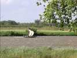
Et au milieu coule la Loire. Avec ce vent, les gabarres peuvent remonter le cours, et même faire la course !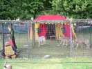
Et coïncidence, ce week-end, fête médiévale sur l'esplanade. Il y a du monde et des pratiquants de cette époque, aussi fondus que des cervolistes, qui viennent là pour vivre un week-end à la mode médiévale... Spectacle de partout, et gratuit, avec des loups et des tigres, un ours, etc.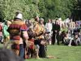
Beaucoup de participants en costume d'époque, qui se préparent ici à décapiter une innocente spectatrice... volontaire, elle l'aura voulu !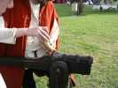
On fourbit des armes d'époque, épées, hallebardes de tous types, armures, etc... Même un canon reconstitué qui tire un coup tous les quarts d'heure ! Normal, il faut le temps de le mettre en oeuvre à nouveau : poudre noire, bourre de paille, un peu de poudre sur la lumière, mèche et boum !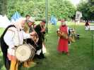
Et un orchestre (on disait comme ça ?) d'époque, vielles, flûte à bec, tambour et tambourin ! Les vielles m'ont l'air d'un type particulièrement sophistiqué, faudra demander l'avis de Sylvien.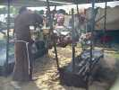
Evidemment, la bouffe, la grande bouffe n'était pas oubliée ! Les rôts sont largement dimensionnés en prévision d'une forte demande !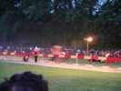
Et le soir, grand tournoi au feu des braseros, les cavaliers luttent d'habileté. Evidemment, il y a un méchant qui triche et est hué... C'est dame Mathilde qui gagne, bien sûr. Elle est très belle au galop, sa blonde chevelure longue flottant derrière elle, et le public la soutient !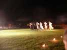
Mais tous les cavaliers se sont donné du mal, avec des lances brisées, des chutes et des combats à pied pour se finir. Ils ont bien mérité un tour d'honneur, spectacle en soi avec les costumes et les caparaçons des chevaux.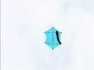
Mais le vent est d'enfer, et on vole au-dessus de la Loire ! Alors on monte gros... Daniel arrive un peu plus tard. Il sort d'abord son Rokkaku qui ne se comporte pas mal mais tire comme un sourd !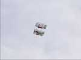
Il montera ensuite son Calomil qui est beau et exemplaire de stabilité, même s'il ira au sol plusieurs fois, mais pas toujours de sa faute...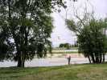
Patrick, avec son carré blanc aura une chance moyenne. D'abord, il le prend dans un arbre. Ensuite il sera coupé mais traversera la Loire et il pourra le récupérer dans les champs. Mais il y aura pire (voir in fine...) quand il sortira son Pellybox.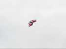
On a vu aussi ce rokkaku, de Gilles, je crois. On l'a même vu dans un arbre, et on a pu mettre en pratique mes conseils sur le sauvetage des CVs. Relisez l'article, tout n'est pas rentré dans la tête des sauveteurs éventuels, en particulier sur le manque d'intérêt des anneaux coulissants...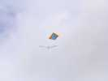
Bon, en attendant, François et moi volons toujours ! Près, quelquefois, mais on ne s'emmêlera jamais... avis aux jeunes !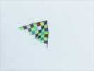
Eric et Daniel ont fabriqué des deltas à carreaux. Pas avec de la toile à carreaux, trop facile, mais en cousant des carreaux à 45° ! Ca fait un beau bord de fuite... très médiéval !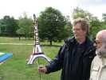
Loïk est venu aussi. Il a construit un prototype de tour Eiffel fixe très joli, mais volera avec ses étagères et un nouveau tambourin...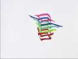
Ah, on entend le Pont de la Rivière Kwai, William arrive ! Il a conçu ce CV pour grand vent, avec une surface très réduite. Il volera sans problèmes.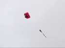
Sylvien ne veut pas risquer une Jessica dans ces conditions, il fera voler son petit m.....x comme il l'appelle ! Cerf-volant intéressant qui ressemble à un flow-form, mais les entrées d'air sont... à l'avant des quilles et dotées de clapets qui le gardent gonflé en toutes circonstances.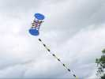
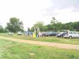
Midi arrive, la plupart des cervolistes sont là et le camp s'est établi avec vue sur la Loire, abris montés et... table installée, bien sûr !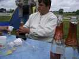
François fête ses 51 berges et offre à boire. Daniel (le copain d'Eric, 10 ans en cuisine) a aussi amené quelques babioles, et Reine des gâteaux. Eric, avec son expérience, ouvre les bouteilles...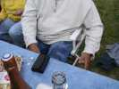
Ben, de l'expérience, il en a encore acquis aujourd'hui, il va falloir sécher ça, sinon il aura l'air de quoi !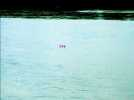
L'après-midi, malheureusement, ce qui devait arriver arrive : le cerf-volant tout neuf et splendide, le Pellybox que Patrick était en train de décoller s'accroche avec un autre et se coupe. Il atterrit au milieu de la Loire et commence à partir doucement mais sûrement...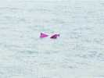
Je cours sur le pont en aval avec une bobine et mon tabouret, c'est tout ce que j'ai comme grappin sous la main... Là, je rencontre un pêcheur qui a vu la chute et a foncé de son côté avec son vélo et sa ligne pour gros. Mais le Pelly plonge quand il passe sous le pont et on ne le voit plus. Il remonte de l'autre côté pour nous narguer. Pont suivant, idem. Sylvien, Patrick et Reine (qui prendront les photos ci-contre) partent en voiture pour le suivre, mais tout ce qu'ils pourront faire c'est le regarder... Adieu Pelly ! A moins que quelqu'un ne le trouve plus bas et le rapporte mais la probabilité est faible... Tout le monde est désolé, Patrick... J'ai suivi la rive nord le lendemain, mais je n'ai rien vu. Allez, à la machine, courage Patrick !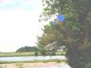
Catastrophe moins grave, le tambourin se prend dans un arbre au bord de l'eau. Heureusement, c'est pas bien haut. Ca se complique un peu car les branches devant sont du bois mort, tout raide. Mais grâce à la perche que Sylvien trimballe en permanence, le sauvetage ne pose pas de problèmes. Merci Sylvien !